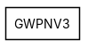
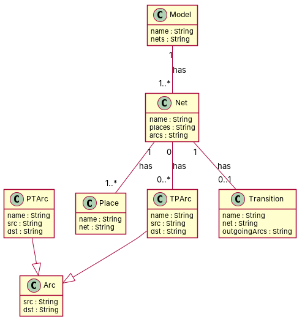

← all cases
D2/GWPNV3 — model qwen, condition B, run 1
1. Requirements (input)
R1: A petri net has a place
R2: a petri net has transitions
R3: a petri net model has nets
R4: A petri net model has arcs
R5: The class PTArc
R6: The class TPArc
R7: In a Petri net, there are places and nets. Each place must be associated to exactly one net
R8: A petri net has places and TPArcs, each place can be part of zero or more arcs
R9: In a petri net model, a transition must be always part of exactly one net
R10: A transition has one to many outgoing TPArcs
R11: A Net is composed of one to many Places
R12: PTArc has one dst Transition
R13: TPArc has one src Transition
2. Result 1 → Result 2 (ambiguity removal)
Red, struck-through: removed by ambiguity removal; green: added.
| classes (9 → 9) |
|---|
| Arc |
| Model |
| MoreArc |
| Net |
| PartOfZero |
| Place |
| Ptarc |
| Tparcs |
| Transition |
| relations (8 → 8) |
|---|
| association: Place -> Net |
| generalization: MoreArc -> Place |
| generalization: PartOfZero -> Place |
| has: Model -> Arc |
| has: Model -> Net |
| has: Net -> Place |
| has: Net -> Tparcs |
| has: Net -> Transition |
3. Ambiguity tags
| id | req | type | cue | status | readings / explanation |
|---|
| A1 | R8 | coordination | and+or | resolved | Each place can be part of zero or more TPArcs and zero or more arcs.; Each place can be part of zero or more arcs and zero or more TPArcs.
The sentence suggests that places can be part of multiple arcs or TPArcs, but it is not clear if these are the same or different types of arcs. |
4. Diagrams generated from the shared model
usecase diagram
class diagram
5. Code skeleton (Python; Java in code/java/)
"""Code skeleton generated from the shared model of D2/GWPNV3.
Every class and method records the requirement(s) it traces to."""
from __future__ import annotations
import dataclasses as _dc
import enum as _enum
import typing as _t
@_dc.dataclass
class Net:
"""Source: -"""
name: _t.Optional[str] = None
places: _t.Optional[str] = None
arcs: _t.Optional[str] = None
tPArcs: _t.List["TPArc"] = _dc.field(default_factory=list)
transition: _t.Optional["Transition"] = None
@_dc.dataclass
class Place:
"""Source: -"""
name: _t.Optional[str] = None
net: _t.Optional[str] = None
@_dc.dataclass
class Arc:
"""Source: -"""
src: _t.Optional[str] = None
dst: _t.Optional[str] = None
@_dc.dataclass
class PTArc(Arc):
"""Source: R5"""
name: _t.Optional[str] = None
src: _t.Optional[str] = None
dst: _t.Optional[str] = None
@_dc.dataclass
class TPArc(Arc):
"""Source: R6"""
name: _t.Optional[str] = None
src: _t.Optional[str] = None
dst: _t.Optional[str] = None
@_dc.dataclass
class Transition:
"""Source: -"""
name: _t.Optional[str] = None
net: _t.Optional[str] = None
outgoingArcs: _t.Optional[str] = None
@_dc.dataclass
class Model:
"""Source: R3"""
name: _t.Optional[str] = None
nets: _t.Optional[str] = None
6. Validation, checks and traceability
| python_compiles | True |
|---|
| java_compiles | True |
|---|
| attribute_mismatches | 0 |
|---|
| method_mismatches | 0 |
|---|
| use_cases | 0 |
|---|
| use_cases_without_actor | 0 |
|---|
| use_cases_without_method | 0 |
|---|
| actors_without_use_case | 0 |
|---|
| relations_to_unknown_class | 0 |
|---|
| inconsistencies | 0 |
|---|
| inconsistency_rate | 0.0 |
|---|
| requirement_coverage | 0.4615 |
|---|
| validator fixes | |
|---|
| assumptions for open ambiguities | [{"tag": "A3", "assumption": "The model assumes that a Petri net model contains at least one net."}] |
|---|
7. Scores against the reference
| element | P | R | F1 | TP/FP/FN |
|---|
| classes | 0.857 | 1.0 | 0.923 | 6/1/0 |
| attributes | 0.0 | 0.0 | 0.0 | 0/18/0 |
| relations | 0.667 | 0.5 | 0.571 | 4/2/4 |
| relations_strict | 0.333 | 0.25 | 0.286 | 2/4/6 |